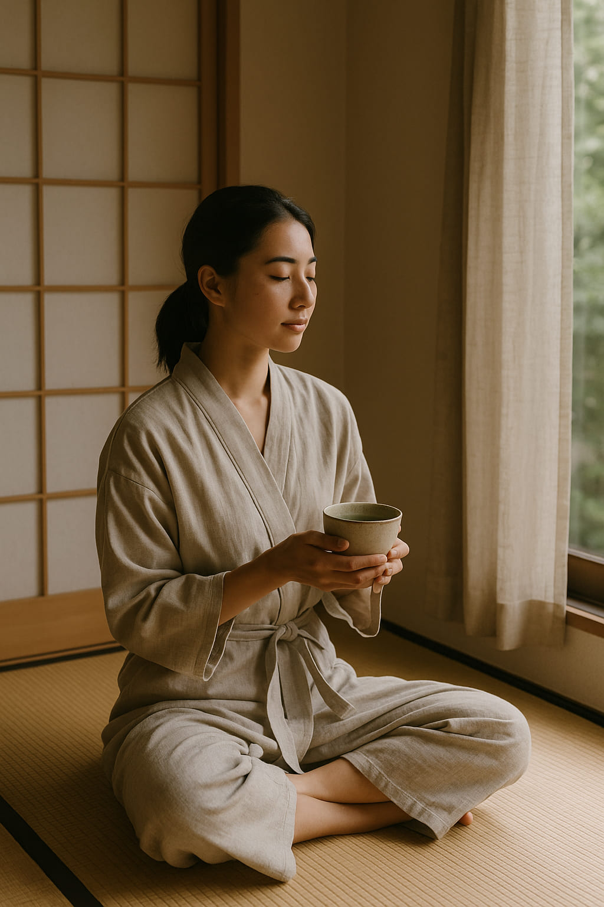

Europeans Are Choosing Latin America Over the U.S. This Summer — Here’s Why
In a notable shift for the 2025 summer travel season, European tourists are increasingly favoring Latin American destinations over traditional trips to the United States. Airlines like Lufthansa, Air France, and KLM have reduced flights to major U.S. cities, redirecting capacity to countries such as Mexico, Brazil, and various Caribbean locales.
Changing Preferences and Practical Considerations
Several factors contribute to this trend. Stricter visa requirements, heightened political tensions, and safety concerns have made the U.S. less appealing to European travelers. Additionally, the rising costs associated with U.S. travel have prompted tourists to seek more affordable and culturally rich alternatives in Latin America.
“Latin America offers a blend of vibrant culture, natural beauty, and value that resonates with today's European traveler,” notes travel analyst Maria López.
Airlines Adjusting Routes
Responding to the changing demand, major European airlines have restructured their flight schedules. Lufthansa has scaled back services to New York, Miami, and Chicago, while increasing flights to destinations like Cancún and São Paulo. This strategic realignment aims to capitalize on the growing interest in Latin American travel.
Implications for the Travel Industry
Tour operators and hospitality providers in Latin America are poised to benefit from this influx of European tourists. The shift also encourages the development of new travel packages and experiences tailored to European preferences, further strengthening the region's appeal.
For travelers seeking a mix of adventure, culture, and affordability, Latin America stands out as the destination of choice this summer.
Words by Style Atlas
Everyday Aesthetics: Living the Japanese Lifestyle with Style
In Japan, lifestyle is not just lived — it is curated. From the graceful pour of a morning coffee to the silent elegance of a home robe, Japanese culture turns daily acts into visual harmony. It’s a lifestyle built on balance, intention, and quiet beauty — one where design and function meet in perfect symmetry.
“Beauty in Japan isn’t reserved for special occasions — it’s embedded in the everyday.”
At Style Atlas, we journey into three symbols of Japanese lifestyle that express this ethos: the artisanal coffee ritual, the obsession with quality stationery, and the aesthetic of home comfort. These are not just objects — they are cultural portals. Here’s how to bring that Japanese way of living into your own routine.
1. The Pour-Over Ritual
The Hario V60 isn’t just a coffee dripper — it’s a modern icon of Japanese lifestyle. With its spiral ridges and heat-resistant glass, this minimalist tool transforms brewing into meditation. It’s no wonder you’ll spot it in cafés across Tokyo, Kyoto, and the homes of style-conscious creatives.
What makes it truly Japanese isn’t just the form — it’s the attention to detail. The slow pour. The precise angle. The quiet moment before the first sip. This is a lifestyle where nothing is rushed, and everything matters.
2. Stationery as Soul
In Japan, writing isn’t just communication — it’s craft. MUJI’s gel ink pens are a staple of that tradition. Simple, precise, and endlessly smooth, these pens represent a culture where the everyday becomes an art form. Whether journaling, sketching, or annotating a manga panel, these tools are part of a larger design philosophy: understated excellence.
Even the packaging is a masterclass in restraint. Transparent sleeves. No branding overload. MUJI is not minimal for the sake of trend — it’s minimal because distraction is noise. And Japan prefers signal.
3. The Art of Being at Home
Forget sweatpants. The Japanese home robe — or yukata-style loungewear — embodies the refined comfort of everyday life. Lightweight linen, neutral tones, and fluid silhouettes make it ideal for a morning stretch, a tea break, or simply watching the rain.
This isn’t about staying in — it’s about tuning in. The robe isn’t just cozy; it’s part of the atmosphere. In Japan, clothing adapts to mood and season. The yukata at home isn’t an afterthought. It’s a continuation of the lifestyle itself.
Living the Aesthetic
To embrace the Japanese lifestyle is not to imitate, but to slow down. It’s waking up with purpose, surrounding yourself with beauty that doesn’t demand attention, and creating rituals that nourish your senses. It’s not about having more — it’s about having better.
Conclusion
The Japanese lifestyle is not one to chase — it’s one to welcome. Through tools, textures, and tempo, it teaches us to find beauty in the present. And that, in itself, is the most stylish way to live.
Words by Style Atlas